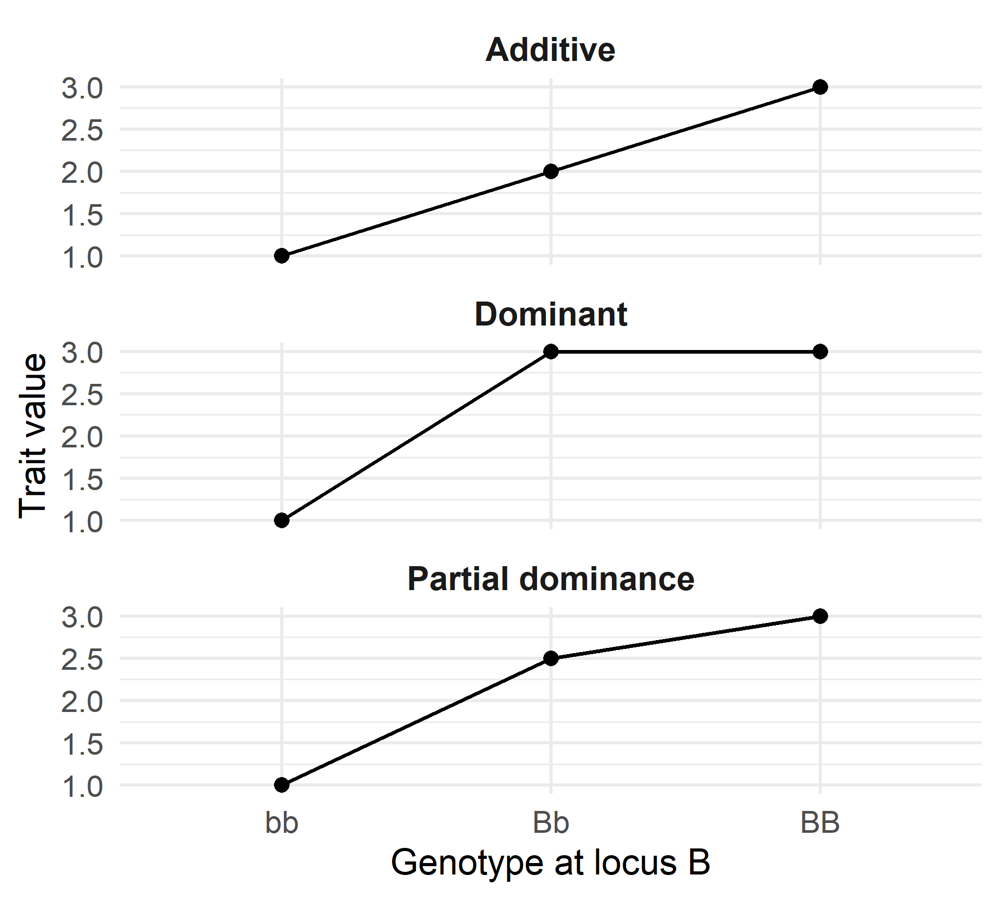
Introduction to Quantitative Genetics
Peter Sørensen
Center for Quantitative Genetics and Genomics
Aarhus University
2026-06-08
Learning Goals - Quantitative Genetics
1. Measuring Quantitative Variation
- Understand how mathematical models and statistical methods are used to study complex traits
2. A Simple Genetic Model
- Assess the relative contributions of genetic and environmental factors to phenotypic variation
3. Heritability
- Calculate and interpret broad-sense heritability
- Calculate and interpret narrow-sense heritability
- Use parental phenotypes to predict offspring phenotypes
4. Mapping Quantitative Traits
- Explain the principle behind genome-wide association studies
What Is Quantitative Genetics?
Quantitative genetics studies complex traits influenced by many genes and environmental factors.
It extends Mendelian genetics by focusing on the combined effects of many genes and the environment.
Statistical models are central to its analysis.
A biological discipline with great applied significance for agriculture, human healthcare, and for understanding evolutionary processes.
Core concepts
- Definition of a quantitative trait
- Genetic models for quantitative traits
- Genetic parameters (heritability, variance, correlation)
- Statistical and mathematical modeling
Relevant for genetic analyses
- Estimating heritability
- Estimating genetic risk or breeding values from pedigree or genomic data
- Predicting response to selection
- Evaluating consequences of selection
Natural and Artificial Selection
Natural selection and selective breeding can both cause changes in animals and plants:
Natural selection happens naturally.
Selective breeding occurs when humans intervene => artificial selection.
Selective breeding (and natural selection) takes place over many generations.
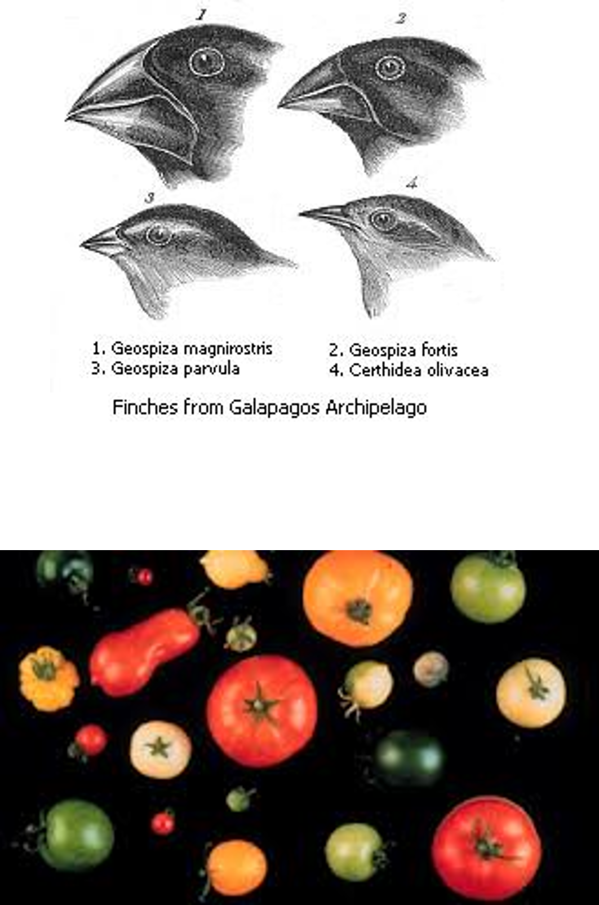
What Is Quantitative Genetics?
Phenotype (P) is determined by genotype (G) and environment (E):
\[ P = G + E \]
- Parents transmit a random sample of their genes to offspring
- Each offspring receives a different genetic combination
Quantitative genetics asks:
How much of the phenotypic variation is due to genetic differences?
This leads to the concept of heritability.
Why does this matter?
Quantitative genetics allows us to:
- Improve traits through selective breeding
- Predict genetic risk in human populations
- Understand how natural selection changes populations
In all cases, we seek to estimate the effect of genotypes (\(G\)) on phenotypes (\(P\)).
What Are Complex (Quantitative) Traits?
Mendelian traits
- Discrete phenotypes (e.g., red/white, sick/healthy)
- Simple genotype–phenotype relationship
- Often large gene effects
Quantitative traits
- Many phenotype classes, often continuously distributed
- Influenced by many genes, each with small effects
- Individual gene effects are typically not directly observable
- Often influenced by the environment
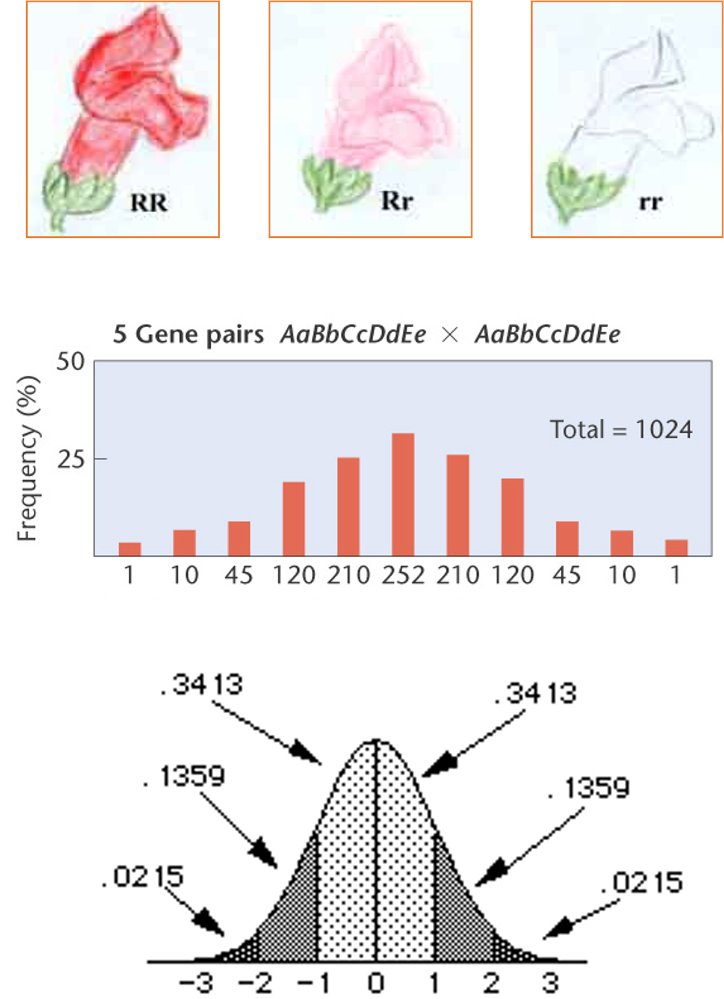
Types of Traits and Inheritance
Individuals are described by their phenotype (e.g., appearance, performance, or disease status).
Continuous traits
- Infinite range of values (e.g., height)
- Typically influenced by many genes and the environment
Categorical traits
- Discrete groups (e.g., purple vs. white flowers)
- May involve simple or complex inheritance
Threshold traits
- Categorical outcome
- Underlying liability is quantitative (e.g., type 2 diabetes)
Meristic traits
- Countable values (e.g., clutch size)
- Quantitative but not continuous
Measuring Quantitative Variation
To study complex traits, we need basic statistical tools:
- Mean describes the average level of a trait
- Variance quantifies variation around the mean
- Normal distribution describes how trait values are distributed
These tools allow us to quantify and compare phenotypic variation.
Mean
\[ \bar{x} = \frac{1}{n} \sum_{i=1}^{n} x_i \]
Variance
\[ \mathrm{Var}(X) = \frac{1}{n-1} \sum_{i=1}^{n} (x_i - \bar{x})^2 \]
Normal distribution
\[ f(x) = \frac{1}{\sqrt{2\pi\sigma^2}} \exp\left(-\frac{(x-\mu)^2}{2\sigma^2}\right) \]
The Mean
When studying quantitative traits, we usually sample from a population.
Sample mean:
\[ \bar{X} = \frac{1}{n} \sum_{i=1}^{n} X_i \]
Population mean:
\[ \mu \]
The mean describes the center of the data.
Example
Height (cm) for 5 individuals:
168, 172, 170, 174, 166
\[ \bar{X} = \frac{168 + 172 + 170 + 174 + 166}{5} \]
\[ \bar{X} = \frac{850}{5} = 170 \]
We use \(\bar{X}\) to estimate the true population mean \(\mu\).
The Variance
Variance describes the spread of the data.
Deviation from the mean:
\[ d_i = X_i - \bar{X} \]
Population variance:
\[ \sigma^2 = \frac{\sum (X_i - \mu)^2}{n} \]
Standard deviation:
\[ \sigma = \sqrt{\sigma^2} \]
Example
Using the sample: 168, 172, 170, 174, 166
Mean: \[ \bar{X} = 170 \]
Deviations: -2, 2, 0, 4, -4
Squared deviations: 4, 4, 0, 16, 16 (sum = 40)
Variance (n = 5): \[ \sigma^2 = \frac{40}{5} = 8 \]
Standard deviation: \[ \sigma = \sqrt{8} \approx 2.83 \text{ cm} \]
The Normal Distribution
Many biological traits follow an approximately normal distribution.
A normal distribution is fully determined by:
- Mean: \(\mu\)
- Variance: \(\sigma^2\)
(or standard deviation \(\sigma\))
Probability density function:
\[ f(x) = \frac{1}{\sigma \sqrt{2\pi}} \exp\left( -\frac{(x - \mu)^2}{2\sigma^2} \right) \]
Key Properties
- Bell-shaped curve
- Symmetric around the mean \(\mu\)
- Spread determined by the standard deviation \(\sigma\)
- Total area under the curve equals 1
Central role in quantitative genetics
- Describing quantitative traits
- Modeling phenotypic variation
- Partitioning genetic and environmental variance
Normal Distribution (Effect of μ and σ)
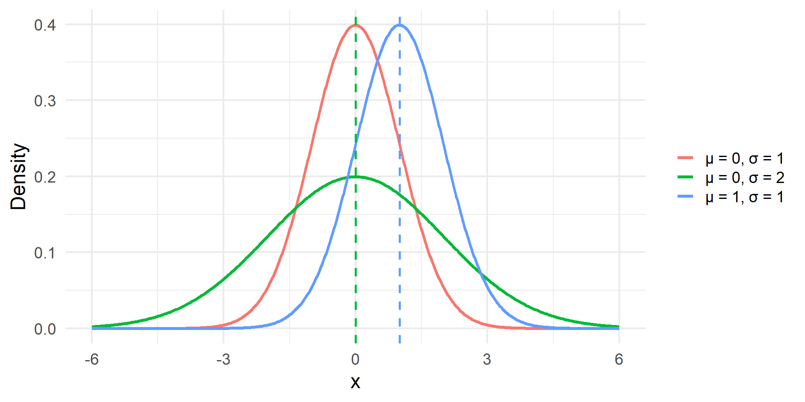
A Simple Genetic Model for Quantitative Traits
Model
A quantitative trait can be expressed as:
\[ P = \mu + G + E \]
- \(\mu\) = population mean
- \(G\) = genetic deviation
- \(E\) = environmental deviation
Deviation from the mean:
\[ p = P - \mu = G + E \]
Interpretation
Differences between individuals arise from:
- Genetic effects
- Environmental effects
- Or both
This model underlies:
- Variance partitioning
- Heritability
- Prediction of response to selection
Illustrative Example: Decomposing a Phenotype
Step 1: Observed phenotype
- Yao Ming’s height: ( P = 229 ) cm
- Population mean: ( = 170 ) cm
Step 2: Deviation from the mean
\[ p = P - \mu \]
\[ p = 229 - 170 = 59 \text{ cm} \]
He is 59 cm taller than average.
Step 3: Interpret using the genetic model
Recall:
\[ p = G + E \]
Therefore:
\[ 59 = G + E \]
The deviation must arise from:
- Genetic effects (\(G\))
- Environmental effects (\(E\))
- Or both
We observe only the total deviation — not its separate components.
Modes of Gene Action at One Locus
Why this matters
Additive gene action:
- Allele effects add linearly
- Produces predictable transmission
- Creates additive variance (\(V_A\))
Dominance:
- Depends on allele combinations
- Does not transmit predictably
- Contributes to \(V_D\), not \(V_A\)
Key insight:
Only additive effects contribute to narrow-sense heritability
Genotype by Genotype Interaction (Epistasis)
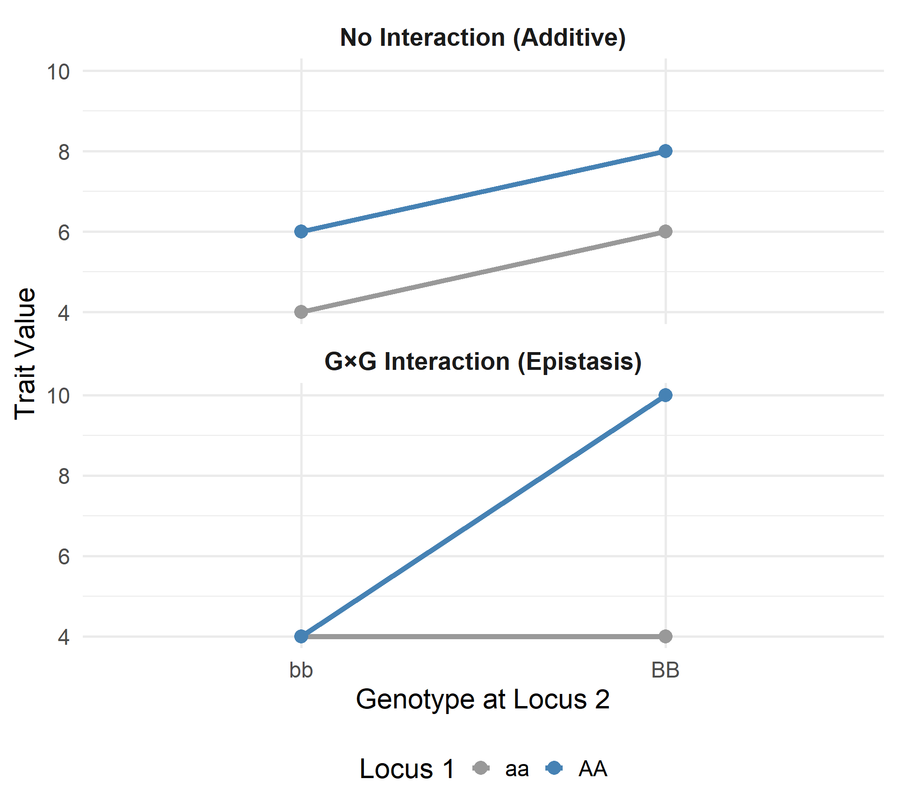
Interaction between Locus 1 and Locus 2
No Interaction (Additive)
- Parallel lines: The lines do not cross or diverge.
- The effect of \(AA\) is the same regardless of whether the background is \(bb\) or \(BB\).
- Genetic effects at different loci simply add up linearly.
G\(\times\)G Interaction (Epistasis)
- Non-parallel lines: Lines cross or show different slopes.
- The effect of \(AA\) depends on the genotype at Locus 2.
- Example: \(AA\) only increases the trait value if the individual also carries \(BB\).
Key Idea:
The phenotypic expression of one gene is modified by the presence of another gene.
Genotype × Environment Interaction
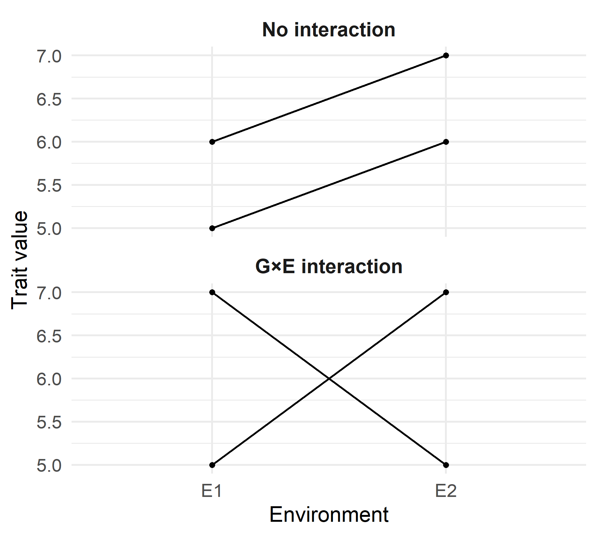
No interaction
- Parallel lines
- Genotype difference is constant across environments
G×E interaction
- Lines cross (or diverge)
- Genotype ranking depends on environment
Key idea:
Genotype performance can be environment-dependent.
From Phenotype to Variance
Start with the model
\[ P = \mu + G + E \]
Phenotypic variance:
\[ V_P = \mathrm{Var}(P) \]
Since \(\mu\) is constant:
\[ V_P = \mathrm{Var}(G + E) \]
Basic statistical rule:
\[ V_P = V_G + V_E + 2\mathrm{Cov}(G,E) \]
If genetic and environmental effects are independent
\[ \mathrm{Cov}(G,E) = 0 \]
Then:
\[ V_P = V_G + V_E \]
Meaning:
Total variation = genetic variation + environmental variation
This is the foundation of heritability.
Visualizing Variance Partitioning
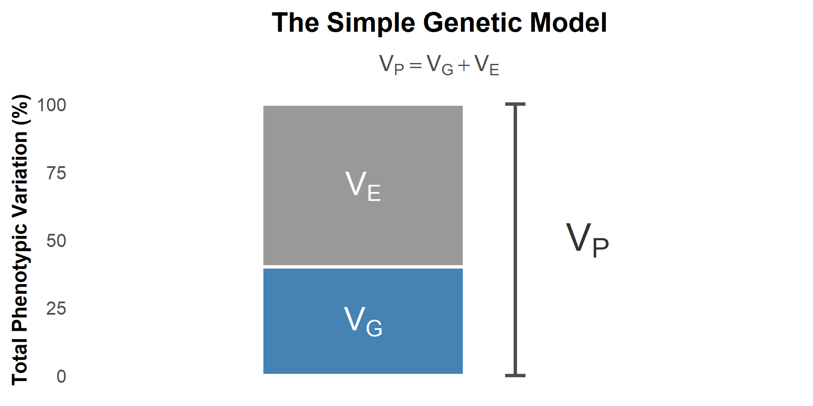
Example: Partitioning Variance (Maize Experiment I)
Numerical results
Total phenotypic variance:
\[ V_P = 14.67 \]
Genetic variance
(variation among inbred line means):
\[ V_G = 12.00 \]
Environmental variance
(variation among environments):
\[ V_E = 2.67 \]
Check:
\[ V_P = V_G + V_E = 12.00 + 2.67 = 14.67 \]
Interpretation
Most variation is genetic
(12.00 of 14.67)Environmental variation is smaller
(2.67)The decomposition holds because:
\[ \mathrm{Cov}(G,E) = 0 \]
Genotypes were randomized
across environments
This illustrates that variance components add when genotype and environment are independent.
Covariance and Correlation in Quantitative Genetics
Covariance: The Core Quantity
Covariance measures whether two variables vary together:
\[ \mathrm{Cov}(X,Y) \]
It appears everywhere in Quantitative Genetics:
- Phenotypic variance
- Genetic variance
- Genetic covariance between traits
- Response to selection
Variance is simply:
\[ \mathrm{Var}(X) = \mathrm{Cov}(X,X) \]
Standardized Form: Correlation
Correlation rescales covariance:
\[ r = \frac{\mathrm{Cov}(X,Y)}{\sigma_X \sigma_Y} \]
- Unitless
- Bounded between −1 and 1
- Measures strength of linear association
In the variance model:
\[ V_P = V_G + V_E + 2\mathrm{Cov}(G,E) \]
If Cov(G,E) = 0, variance components add cleanly.
Visualizing Correlation
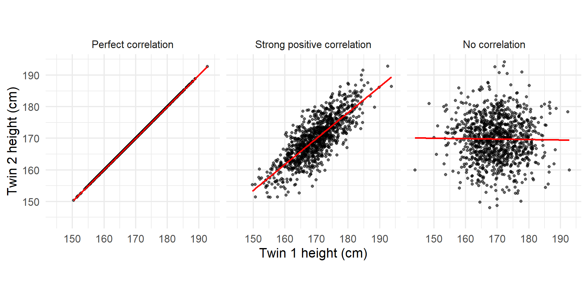
Broad-Sense Heritability (\(H^2\))
Definition
Key question:
- How much of the observed variation is genetic?
Broad-sense heritability:
\[ H^2 = \frac{V_G}{V_P} \]
where:
- \(V_G\) = genetic variance
- \(V_P\) = total phenotypic variance
Range:
- \(0 \le H^2 \le 1\)
Interpretation
- \(H^2 = 0\) → all variation is environmental
- \(H^2 = 1\) → all variation is genetic
Important:
- Describes variation in a population
- Not the “% genetic” of an individual
- Population- and environment-specific
“Broad-sense” includes:
- Additive effects
- Dominance effects
- Gene–gene interactions (epistasis)
Heritability Depends on the Environment (Maize Example)
Experiment I: Similar Environments
- \(V_G = 12.0\)
- \(V_E = 2.67\)
- \(V_P = 14.67\)
\[ H^2 = \frac{12.0}{14.67} = 0.82 \]
Interpretation:
- 82% of the observed variation is genetic
- Trait appears highly heritable
Experiment II: More Variable Environments
- \(V_G = 12.0\)
- \(V_E = 24.0\)
- \(V_P = 36.0\)
\[ H^2 = \frac{12.0}{36.0} = 0.33 \]
Interpretation:
- 33% of the observed variation is genetic
- Environmental variation dominates
Estimating Heritability Using Identical Twins
Theory
Identical (monozygotic) twins:
- Share 100% of their genes
- If reared apart → environments treated as independent
Under independence:
\[ \mathrm{Cov}(\text{Twin 1}, \text{Twin 2}) = V_G \]
Therefore:
\[ H^2 = \frac{V_G}{V_P} = \frac{\mathrm{Cov}(\text{twins})}{V_P} \]
Key assumption:
\[ \mathrm{Cov}(G,E) = 0 \]
Example: IQ in Twins Reared Apart
From data:
- Covariance between twins = 119.2
- Total phenotypic variance \(V_P\) = 154.3
Heritability estimate:
\[ H^2 = \frac{119.2}{154.3} = 0.77 \]
Interpretation
77% of IQ variation (in this population)
is associated with genetic differencesRefers to population variation
— not individuals
Broad-Sense Heritability in Humans
| Trait | \(H^2\) |
|---|---|
| Physical traits | |
| Height | 0.88 |
| Fingerprint ridge count | 0.97 |
| Systolic blood pressure | 0.64 |
| Cognitive traits | |
| IQ | 0.69 |
| Spatial processing speed | 0.36 |
| Personality traits | |
| Extraversion | 0.54 |
| Neuroticism | 0.48 |
| Psychiatric disorders | |
| Autism | 0.90 |
| Schizophrenia | 0.80 |
| Major depression | 0.37 |
| Beliefs / attitudes | |
| Religiosity (adults) | 0.30–0.45 |
| Conservatism (adults) | 0.45–0.65 |
This table shows broad-sense heritability (\(H^2\)) estimates from twin studies.
\[ H^2 = \frac{V_G}{V_P} \]
Key patterns:
Physical traits → often high \(H^2\)
(e.g., height, fingerprints)Cognitive & personality traits → moderate \(H^2\)
Psychiatric disorders → variable
(some high, some moderate)Even beliefs and attitudes show measurable heritability
Narrow-Sense Heritability: Predicting Phenotypes
From Broad to Narrow Heritability
Broad-sense heritability:
\[ H^2 = \frac{V_G}{V_P} \]
But genetic variance contains multiple components:
Additive variance (\(V_A\))
→ predictably transmittedDominance variance (\(V_D\))
→ depends on allele combinations
Total genetic variance:
\[ V_G = V_A + V_D + V_I \]
where \(V_I\) = interaction (epistatic) variance
Narrow-Sense Heritability
\[ h^2 = \frac{V_A}{V_P} \]
Focuses only on additive variance.
Why?
- Additive effects are predictably inherited
- Determine parent–offspring resemblance
- Determine response to selection
Key idea:
Additive genetic variation drives response to selection.
Narrow-Sense Heritability (\(h^2\))
Definition
\[ h^2 = \frac{V_A}{V_P} \]
- \(V_A\) = additive genetic variance
- \(V_P\) = total phenotypic variance
Only additive variance is predictably transmitted.
Broad-sense heritability:
\[ H^2 = \frac{V_G}{V_P} \]
But:
\[ V_G = V_A + V_D + V_I \]
Estimation
Parent–offspring covariance:
\[ \mathrm{Cov}_{\text{parent, offspring}} = \frac{1}{2} V_A \]
Therefore:
\[ h^2 = \frac{2\,\mathrm{Cov}_{\text{parent, offspring}}}{V_P} \]
Half-sibs share \(\frac{1}{4}\) of additive effects:
\[ V_A = 4\,\mathrm{Cov}_{\text{half-sibs}} \]
Example:
Human height: \(h^2 \approx 0.8\)
Narrow-Sense Heritability (h²)
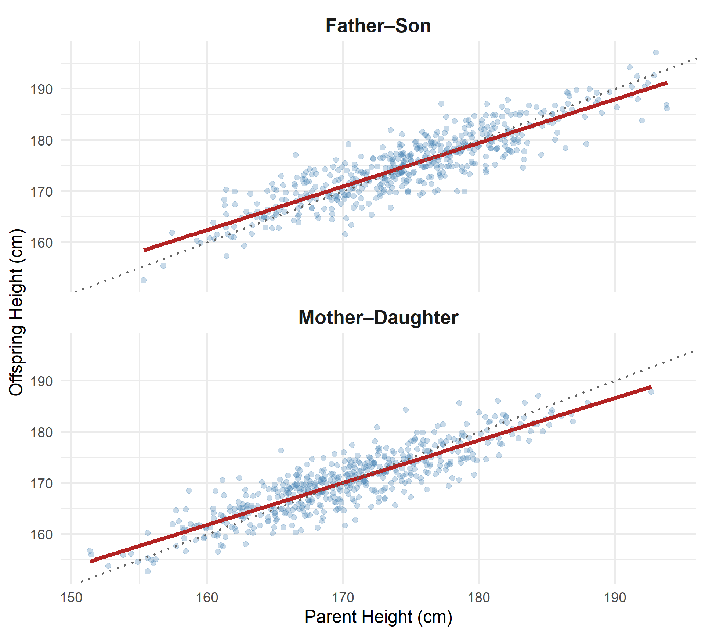
Parent–Offspring Regression for Height
- Each point = one parent–offspring pair
- Clear positive relationship
- Slope of regression line ≈ \(h^2\)
Interpretation:
The steeper the slope, the greater the additive genetic contribution to variation.
Narrow-Sense Heritability (h²) Across Species
| Trait | h² (%) |
|---|---|
| Agronomic species | |
| Body weight (cattle) | 65 |
| Milk yield (cattle) | 35 |
| Back-fat thickness (pig) | 70 |
| Litter size (pig) | 5 |
| Body weight (chicken) | 55 |
| Egg weight (chicken) | 50 |
| Natural species | |
| Bill length (Darwin’s finch) | 65 |
| Flight duration (milkweed bug) | 20 |
| Plant height (jewelweed) | 8 |
| Fecundity (red deer) | 46 |
| Life span (collared flycatcher) | 15 |
These are estimates of narrow-sense heritability (h²) in different species and traits.
\[h^2 = V_A / V_P\]
- Measures additive (transmissible) variation
- Predicts response to selection
Patterns:
- Production traits in livestock often show moderate–high h²
- Reproductive traits tend to have low h²
- Natural populations show wide variation
Low h² does not mean genes are unimportant —
it means additive variance is limited relative to total variance.
Predicting Offspring Phenotypes
What is transmitted?
Individual deviation from the mean:
\[ x = a + d + e \]
Parents:
\[ x' = a' + d' + e' \]
\[ x'' = a'' + d'' + e'' \]
Expected offspring deviation:
\[ \mathbb{E}[x_0] = \frac{a' + a''}{2} \]
Only additive effects (\(a\))
are predictably transmitted.
Dominance (\(d\)) and environment (\(e\))
are not transmitted predictably.
Prediction Using \(h^2\)
Since \(a\) is not directly observed:
\[ \widehat{x}_{\text{offspring}} = h^2 \,\bar{x}_{\text{parents}} \]
Predicted phenotype:
\[ \widehat{X}_{\text{offspring}} = \mu + \widehat{x}_{\text{offspring}} \]
Example (Sheep fleece)
Population mean = 6.0 lb
Mean parental deviation = 0.75
\(h^2 = 0.4\)
\[ 0.4 \times 0.75 = 0.3 \]
Predicted offspring:
\[ 6.0 + 0.3 = 6.3 \text{ lb} \]
Selection on Complex Traits
Artificial selection
Humans select individuals with desirable phenotypes for reproduction.
Selection differential \[ S = \bar{X}_{\text{selected}} - \bar{X}_{\text{population}} \]
Response to selection \[ R = \bar{X}_{\text{offspring}} - \bar{X}_{\text{population}} \]
Breeder’s equation \[ R = h^2 S \qquad h^2 = \frac{R}{S} \]
Only additive genetic variance contributes to the response.
Example: Provitamin A in maize
Base population mean = 1.25 µg/g
Selected mean = 1.63 µg/g
Offspring mean = 1.44 µg/g
Selection differential:
\[ S = 1.63 - 1.25 = 0.38 \]
Response:
\[ R = 1.44 - 1.25 = 0.19 \]
Heritability:
\[ h^2 = \frac{0.19}{0.38} = 0.50 \]
About 50% of the variation contributing to selection is additive and transmitted to the next generation.
Selection Shifts the Population Mean
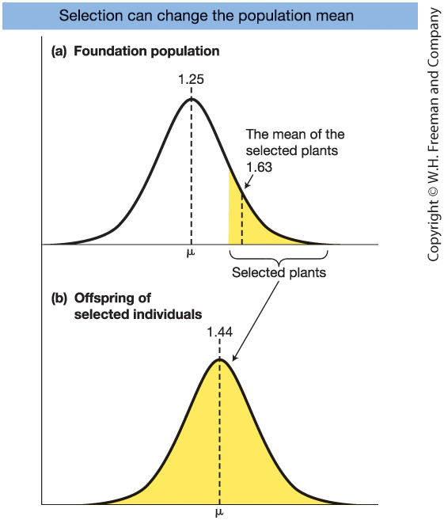
Figure 19-9.
One generation of artificial selection for provitamin A in maize.
Base population mean = 1.25 μg/g
Selected group mean = 1.63 μg/g
Offspring mean = 1.44 μg/g
Selection differential:
\[ S = 1.63 - 1.25 = 0.38 \]Selection response:
\[ R = 1.44 - 1.25 = 0.19 \]
Only the additive (heritable) component causes the shift in the next generation.
Long-Term Response to Artificial Selection

Figure 19-10.
Long-term selection experiments demonstrate sustained evolutionary change.
- Fruit flies
- Selected for increased flight speed
- Mean speed increased dramatically over 100 generations
- Mice
- Selected for voluntary wheel running
- Large increase over just 10 generations
- Control (unselected) lines changed very little
Key message:
Populations contain substantial additive genetic variation
and can respond to selection for many generations.
What Heritability Does NOT Mean
Broad-sense heritability \[ H^2 = \frac{V_G}{V_P} \]
Narrow-sense heritability \[ h^2 = \frac{V_A}{V_P} \]
Heritability is:
- Population-specific
- Environment-specific
- A measure of variation, not destiny
Heritability does NOT mean:
- Not the “% genetic” of an individual
- Not that a trait is genetically fixed
- Not that a trait cannot change
- Not universal across populations
- Not independent of environment
From Phenotype to Genotype: The “Missing” Link
What we know so far
- Traits such as height are heritable (\(h^2 \approx 0.8\)).
- Variation is multifactorial (many genes + environment).
- We can predict response to selection from parents.
The Big Question
- What do the underlying genes actually do?
- Where are they located in the genome?
- Which DNA variants contribute to \(V_G\)?
- What is the biological basis of allele effects?
- How do genes interact within pathways?
The Solution: Association Mapping
- Strategy: Scan the genome for statistical associations.
- Tool: High-density SNP markers (M).
- Principle: Linkage disequilibrium (LD) with causal variants (Q).
We move from describing how much is inherited
to identifying what is inherited.
Genome-Wide Association Study (GWAS)
Goal
Identify genomic regions associated with complex traits
in natural, random-mating populations.
Core Idea
Test statistical associations between:
- Genetic markers (SNPs)
- Phenotypic variation
Key Characteristics
- Scans the entire genome
- Tests thousands to millions of SNPs
- No need to specify candidate genes in advance
Compared to classical QTL mapping
- No controlled crosses required
- No pedigree information required
- Applied directly in natural populations
Why GWAS Works: Marker–QTL Linkage Disequilibrium
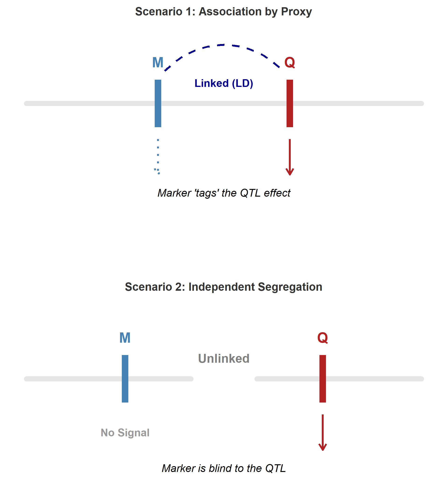
Concept
- A causal mutation (QTL) influences the trait
- A nearby SNP may be in linkage disequilibrium (LD) with the QTL
- The SNP is therefore correlated with the causal variant
Therefore, the SNP shows statistical association
even if it is not itself causal.
Key Point
GWAS detects markers that are in LD
with causal variants.
From Biological Data to Statistical Model
Phenotype data
Measured trait values for \(n\) individuals.
Example (height):
| Individual | Phenotype (\(y\)) |
|---|---|
| Ind₁ | 170 |
| Ind₂ | 165 |
| Ind₃ | 182 |
| … | … |
Phenotypes form a vector:
\[ \mathbf{y} = \begin{pmatrix} y_1 \\ y_2 \\ y_3 \\ \vdots \end{pmatrix} \]
Genotype matrix
Genotypes organized into an \(n \times m\) matrix.
| SNP₁ | SNP₂ | SNP₃ | … | |
|---|---|---|---|---|
| Ind₁ | 0 | 1 | 2 | |
| Ind₂ | 1 | 1 | 0 | |
| Ind₃ | 2 | 0 | 1 | |
| … |
Common SNP coding:
- 0 = Homozygous reference
- 1 = Heterozygous
- 2 = Homozygous alternative
\[ \mathbf{X} \]
The Principle Behind GWAS
Goal
Identify loci associated with variation in a trait.
For each SNP test whether genotype predicts phenotype.
Statistical model (single SNP):
\[ y_i = \mu + \beta x_{ij} + \varepsilon_i \]
- \(y_i\) = phenotype of individual \(i\)
- \(x_{ij}\) = genotype (0,1,2) at SNP \(j\)
- \(\beta\) = SNP effect
- \(\varepsilon_i\) = residual variation
Procedure
- Test SNP₁
- Test SNP₂
- Test SNP₃
- …
- Test all \(m\) SNPs
Thousands to millions of tests.
If \(\beta\) is not equal to zero, the test is statistically significant and there is evidence of association.
How GWAS Works: Single Marker Test
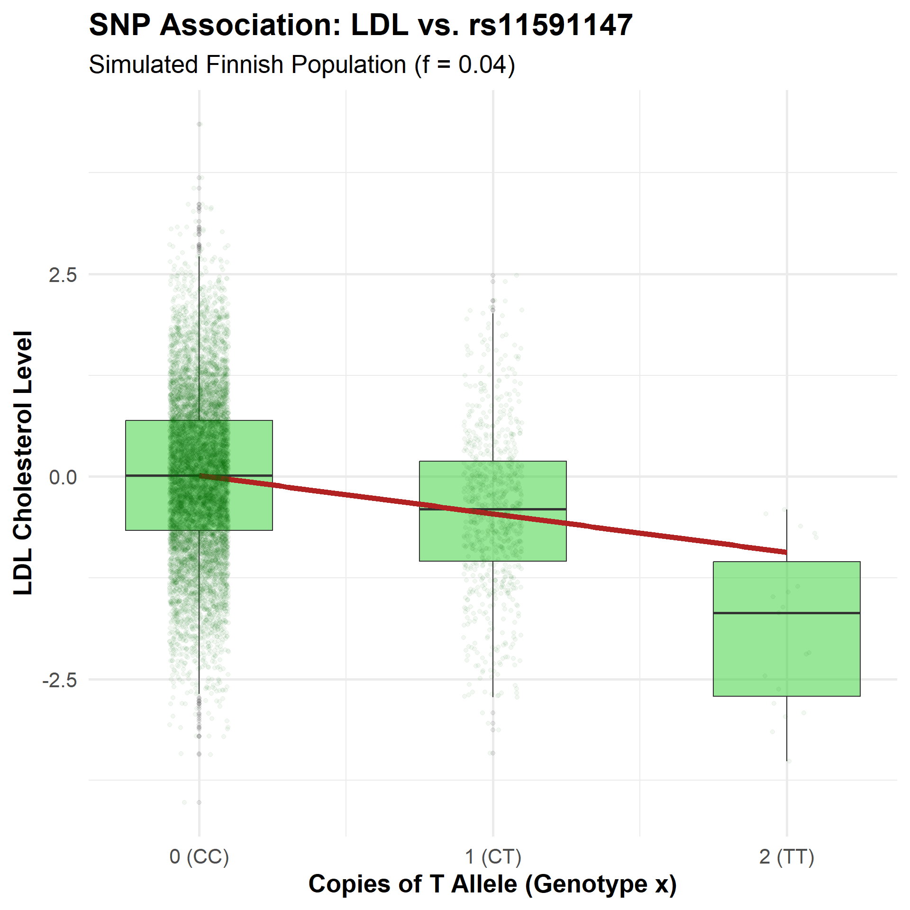
The Additive Model
We fit a linear regression: \[y = \mu + x\beta + \varepsilon\]
- \(y\): Phenotype (LDL)
- \(x\): Genotype (0, 1, or 2)
- \(\beta\): Effect size per allele
Interpretation
- \(\beta\) represents the average change in LDL for each additional T allele.
- The \(p\)-value from this model tests the null hypothesis: \(\beta = 0\).
- Here, each T allele significantly decreases LDL.
How GWAS Works: Many Marker Test
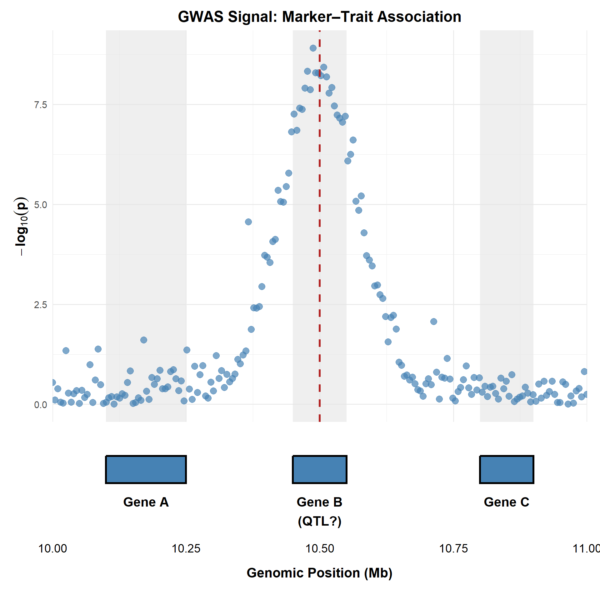
The Interpretation
- Association Peak: The highest points cluster over a specific genomic region.
- Candidate Gene (QTL): The vertical dashed line shows the “lead SNP” falls directly within Gene B.
- The “Neighborhood” Effect: Note how the shading spans the whole gene. Because of LD, many SNPs in the red-shaded region appear significant, but only one gene is likely the true functional driver.
Key point This visual demonstrates Fine-Mapping: the process of narrowing down a broad GWAS “skyscraper” to the specific gene region most likely to contain the causal variant.
How GWAS Works: From P-values to Manhattan Plot
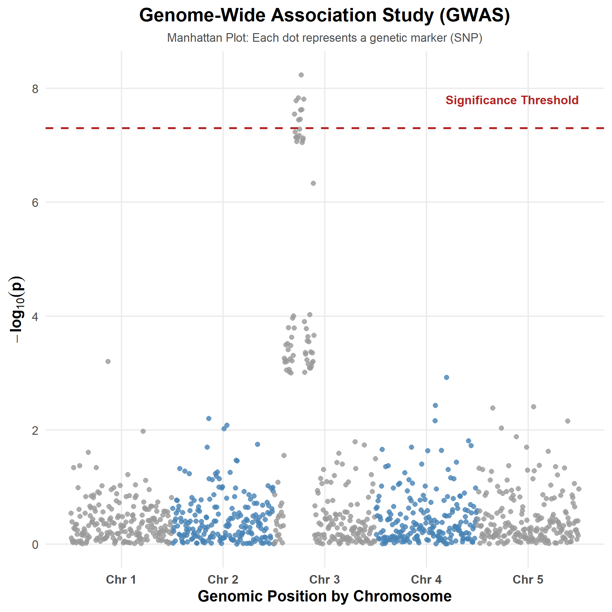
Each point = one SNP
- X-axis → genomic position
- Y-axis → \(-\log_{10}(p)\)
Higher points = stronger evidence
against the null hypothesis.
Dashed line
- Genome-wide significance threshold
\(\bigl(\text{e.g., } p < 5\times10^{-8}\bigr)\)
Peaks indicate genomic regions
associated with the trait.
GWAS Identifies a Gene for Body Size in Dogs
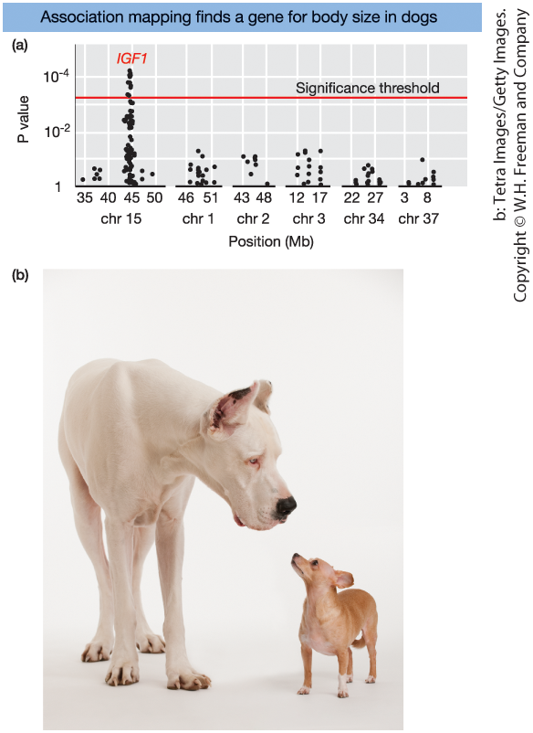
Figure 19-18.
- Genome-wide association study (GWAS) for body size in dogs
- Each dot = one SNP
- Y-axis = −log10(P value)
- Horizontal line = significance threshold
- Strong peak on chromosome 15
→ Region contains the IGF1 gene
- Small vs. large dog breeds
IGF1 is a major contributor to size differences.
GWAS Identifies Genes for Common Human Diseases

Figure 19-19.
Genome-wide association studies (GWAS)
for several common human diseases.
- X-axis: Chromosomes 1–22
- Y-axis: −log10(P value)
- Green dots = significant SNP associations
- Red labels = candidate genes identified
Examples:
- Coronary artery disease → APOE
- Crohn’s disease → IL23R, ATG16L1, IRGM
- Rheumatoid arthritis → PTPN22, HLA-DRB1
- Type 1 diabetes → PTPN22, HLA-DRB1
Quantitative Genetics
What is studied?
- Complex traits influenced by many genes and environment
- Traits that do not follow simple Mendelian ratios
Examples:
- Continuous (e.g., height)
- Threshold (e.g., disease status)
- Meristic (e.g., litter size)
Core model
\[ P = G + E \]
- Phenotypic variation arises from genetic and environmental effects
- Key question: How much variation is genetic?
Why it matters
- Estimate heritability
- Predict genetic risk or breeding values
- Predict response to selection
- Understand evolutionary change
Genetic Model and Response to Selection
Genetic Model
Genetic deviation:
\[ G = A + D \]
- \(A\) = additive deviation (breeding value)
- \(D\) = dominance deviation
Only additive effects are predictably transmitted
from parents to offspring.
Additive variance (\(V_A\)) is the key component for long-term genetic change.
Breeder’s Equation
Response to selection:
\[ R = h^2 S \]
- \(S\) = selection differential
- \(R\) = response to selection
- \(h^2 = \dfrac{V_A}{V_P}\)
Response depends on:
- Strength of selection
- Amount of additive genetic variation
High \(h^2\) → rapid response
Low \(h^2\) → limited response
Variance and Heritability
Phenotype model \[ P = \mu + G + E \]
Phenotypic variance \[ V_P = V_G + V_E \]
Broad-sense heritability \[ H^2 = \frac{V_G}{V_P} \]
Narrow-sense heritability \[ h^2 = \frac{V_A}{V_P} \]
Interpretation
Total variation can be partitioned into Genetic variance and Environmental variance
Broad-sense heritability (H²)
Proportion of total variation due to genetic effects
(additive, dominance, epistatic).
Narrow-sense heritability (h²)
Proportion due to additive (transmissible) variation.
Only additive variance predicts response to selection.
Mapping Complex Traits
The Goal of Mapping
- Move from statistical variance (\(V_G\)) to physical loci (QTLs).
- Identify which specific regions of the genome drive the trait.
The Strategy: GWAS
- Scan the whole genome using SNPs.
- Test for statistical association between Marker (M) and Trait.
- Relies on Linkage Disequilibrium (LD).
Key Discoveries from GWAS
- Polygenicity: Most complex traits are influenced by thousands of loci.
- Small Effects: Most individual variants explain \(<1\%\) of the variance.
- Non-coding regions: Many QTLs are in regulatory regions, not just proteins.
The Result: Manhattan Plot
- Skyscrapers = Genomic regions in LD with a causal variant.
- Threshold = Corrects for millions of tests.